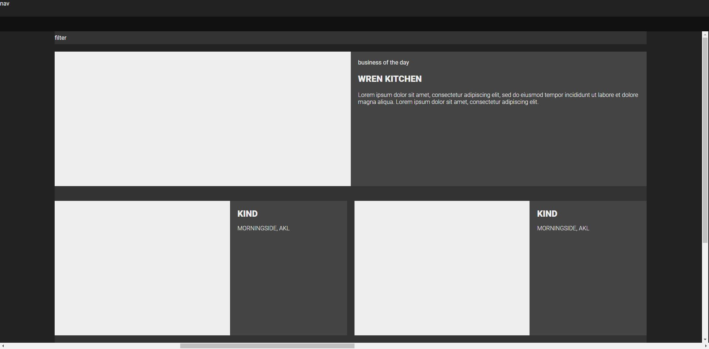
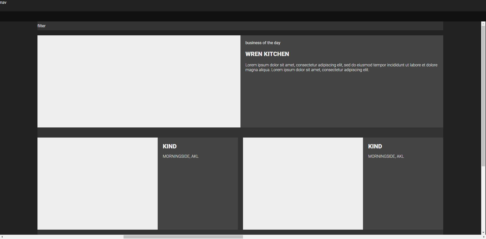

The last one
10 Oct
Final touches on my blog. I added an image class for the case where there is only one image
in a post, and therefore doesn’t need to be in the slider and therefore should span across
the whole post, and I added the alt text of an image into the Modal. This should make it a
lot easier when I’m blogging to explain what the screenshots are. I also changed the scroll
into view method to align the content to the centre of the page, this is to accommodate for
smaller blog posts that won’t have their date triggered if they are scrolled to top of the
viewport.
I’m also doing a fair amount of blog catchup right now so excuse the changing tense. I feel
like I could write more about a lot of things, especially our continued development of
project 2 since our group has spent a lot of time doing work trying to figure out the best
way of doing things through discussion, which is hard to quantify in these blog posts. Also
on the figma situation, when I made my initial wireframe that is right down the bottom I had
a lot of angst against figma, and I also didn’t know how to use it correctly, but it was
still a part of the development so there it is. I could go back and make a new one, but what
would I make? My finished blog just in figma? I don’t know that feels like a waste of time.
But I’m looking at the Blog assignment on blackboard right now and prototypes seem to be
there so.
Since a lot of my blog is oriented around elements being stickied, and user interaction, its
difficult to prototype my final blog in figma. But it gets the idea across.
In terms of reflecting on my initial plan for my website, I’ll look back to the first
iteration of my blog that I created in the class session when we were first introduced to
this project.
Honestly I found this project difficult, I found that given a very limited objective,
(create a simple website where the only prerequisite is that you can record blog posts) I
struggled to find ways to make it interesting for myself. Especially given that my personal
design ethos is very minimalist/brutalist. A simple project with a simple aesthetic is not
what I wanted to create, however that is what my first iteration of my blog was. The
development process of my website has been trying to strike a balance between complicating
things for myself, but also so that I could put forward an ‘impressive submission’ and
retaining the simple structure and aesthetic that I favour. The first iteration of my
website visually is almost identical, if not simpler in my final iteration. It’s the same
black and white colours, the same blog structure, with the image at the top, and it’s the
same premise, just scroll down. However, I have removed the stickied nav, as the information
there was not relevant when the user is scrolling, and I moved to just a single HTML page,
as I felt I didn’t have enough information to place on my home/landing screen to justify it
being separate to the main content. My blog however has changed on the interaction side, I
added the image modal, the draggable slider, the date navigation. Only the slider was
planned in my early versions (at least in my head) and at that point it was a regular
carousel, and not what I ended up with.
you can imagine that the links on the landing page take you to very cool social media
accounts.

 
